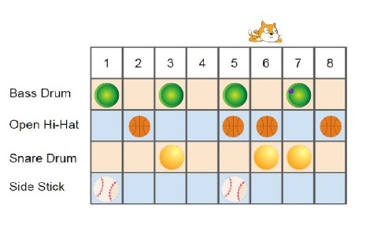
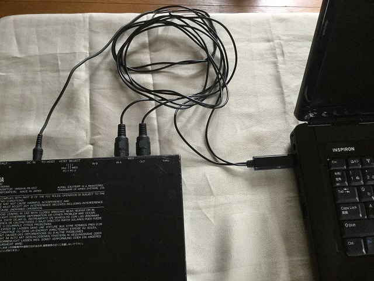
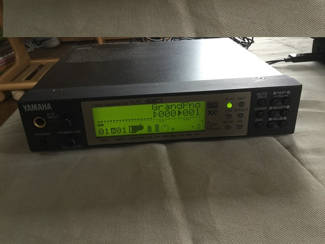
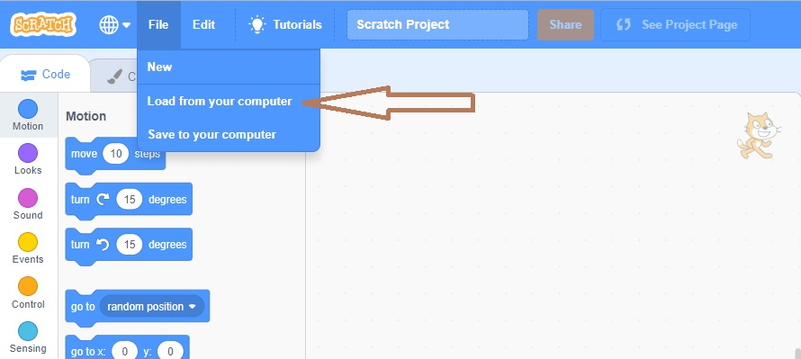
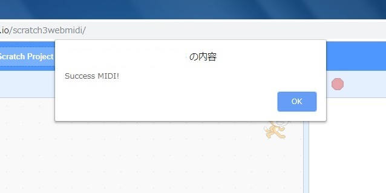
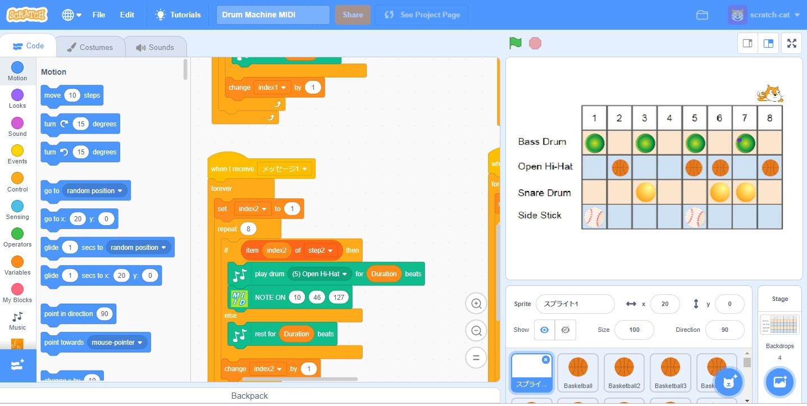

Usage of Drum Machine Scraych 3 MIDI

Prototype is
here.
The bellow is a procedure to use Web MIDI extention and Drum Machine Stuff for Scratch 3.
And there is the scetch, "Drum Machine MIDI.sb3".
Please download from
this Github.
1. Pripare a MIDI kyoboard and connect to your computer through USB.
I used a Midi to USB Cable Interface Converter and Mu80, a tone generator.


2. Open this URL after connection a MIDI keyboard to your computer.
https://UchiwaFuujinn.github.io/scratch3webmidi/
3. Load "Drum Machine MIDI.sb3" from this menuy.

4. Web MIDI API is started as follows, push ok the button.

5.You can find Drum Machine MIDI stuff

6. Push the green flag, drum machine is starting and MIDI are output to a tone generator.
You can change the sequence by clicking on the table.